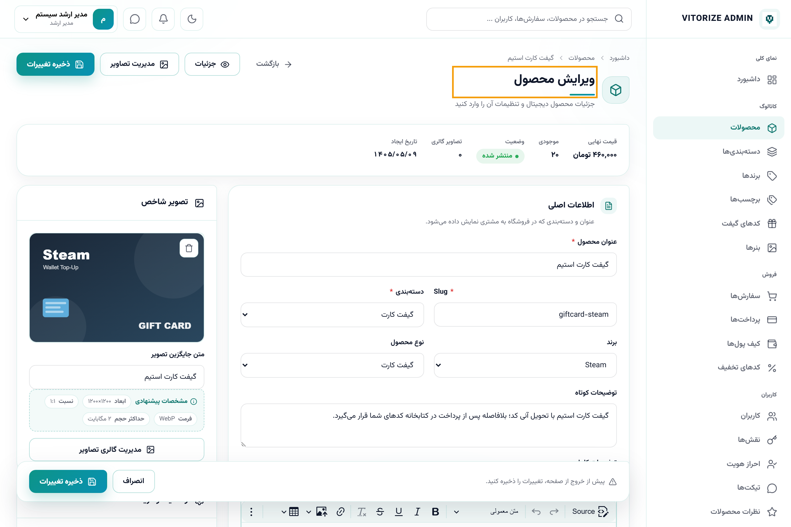
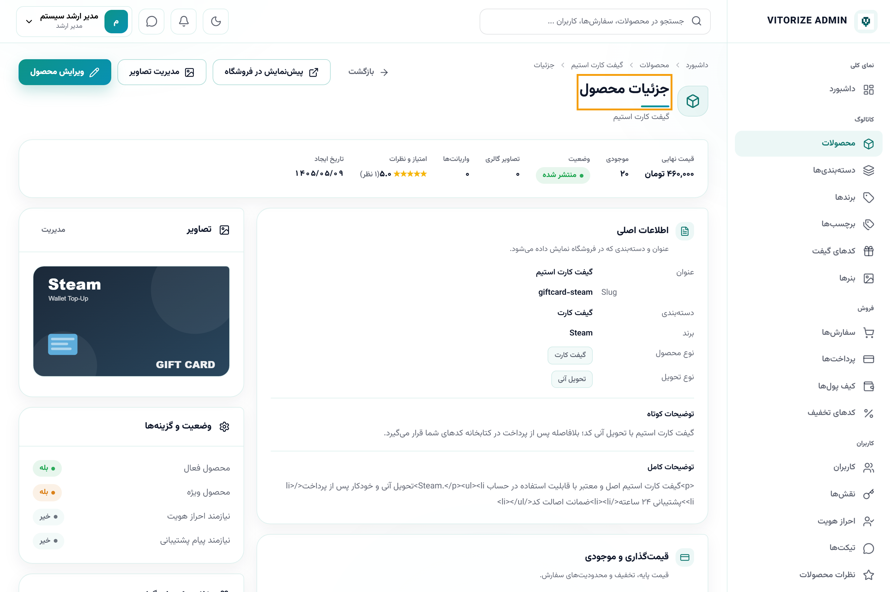
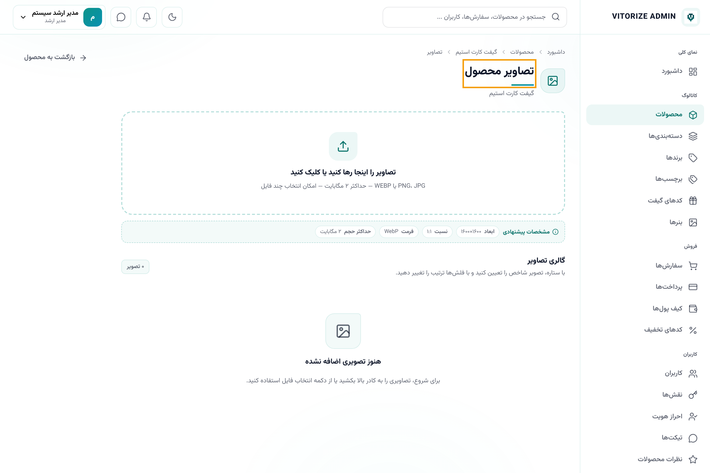
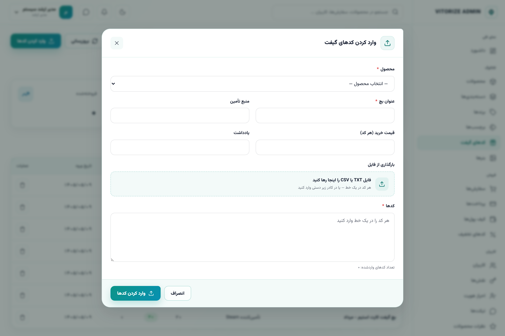
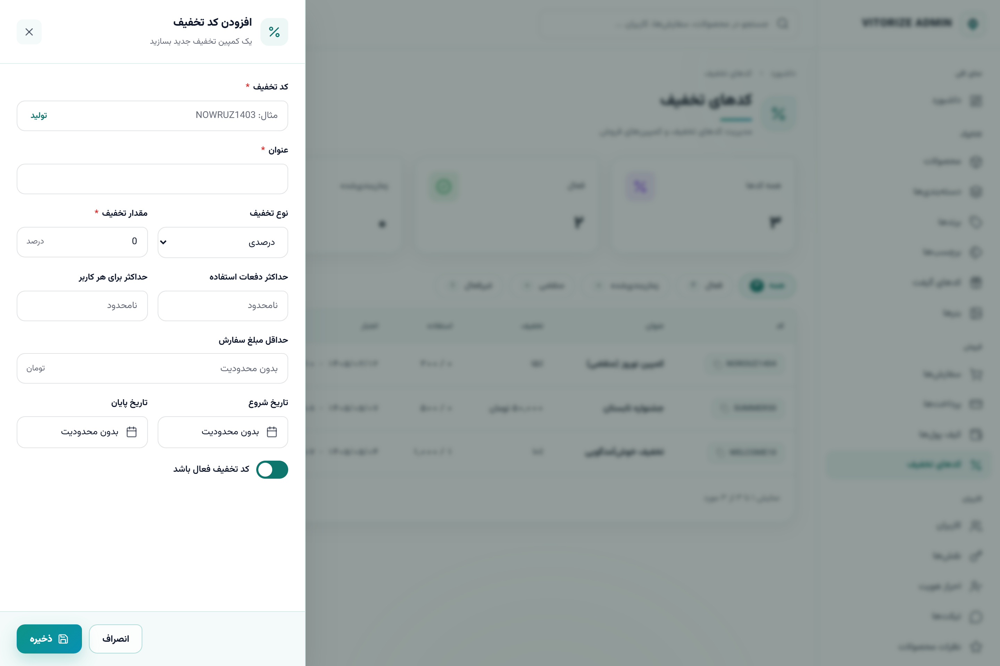
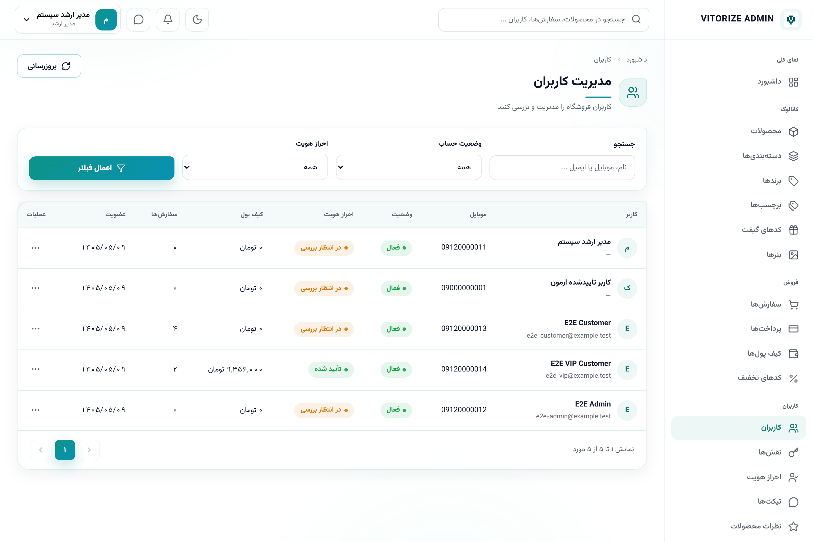
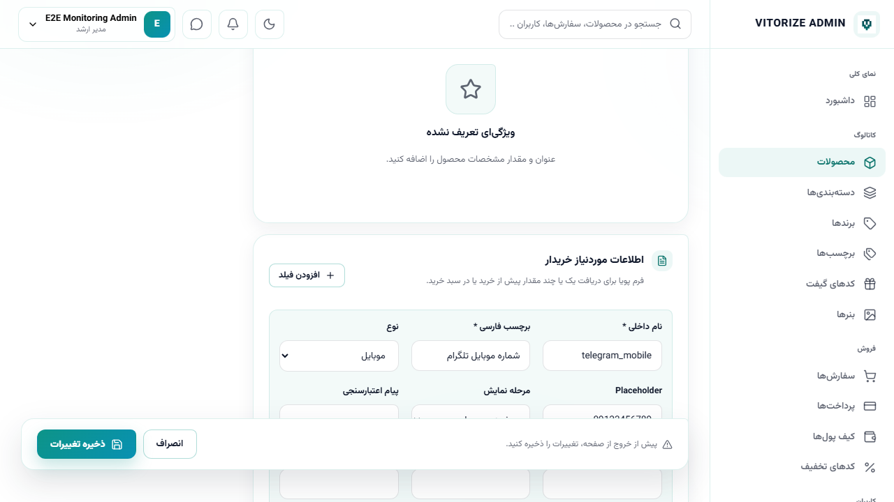
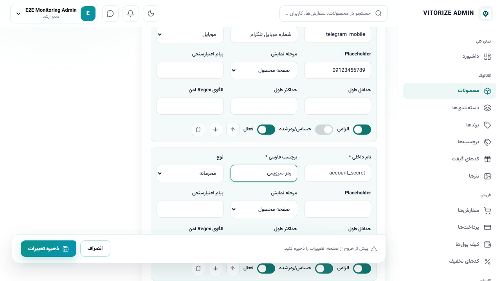
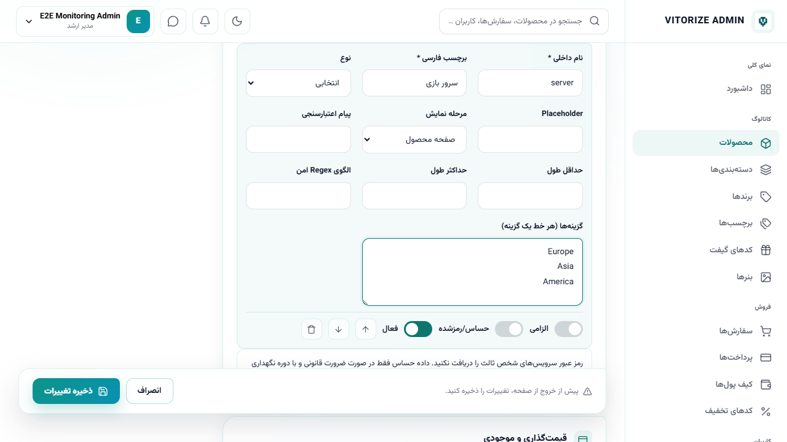
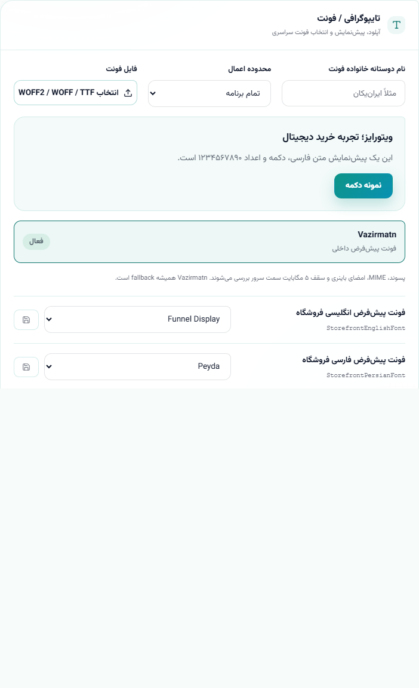

داشبورد، صفحهٔ نخست پنل مدیریت است و نمای کلی سلامت و عملکرد فروشگاه را در یک نگاه ارائه میدهد. مدیر با ورود به پنل، ابتدا این صفحه را میبیند و از آن به همهٔ بخشها دسترسی دارد.
ردیف بالای داشبورد هشت کارت کلیدی دارد که هرکدام یک شاخص حیاتی را نشان میدهند:
| ویجت | معنا و کاربرد مدیریتی |
|---|---|
| درآمد امروز | مجموع فروش موفق امروز به تومان؛ نبض روزانهٔ کسبوکار. نمودار کوچک زیر آن روند ۷ روز اخیر را نشان میدهد. |
| درآمد این ماه | مجموع فروش موفق ماه جاری؛ برای پایش هدف ماهانه. |
| سفارشها | تعداد کل سفارشها و تعداد سفارش امروز؛ برای سنجش حجم تقاضا. |
| کاربران | تعداد کل کاربران و ثبتنام امروز؛ شاخص رشد. |
| کدهای گیفت موجود | موجودی قابل فروش، بههمراه تفکیک «رزروشده» و «فروختهشده». پایینبودن این عدد یعنی خطر اتمام موجودی. |
| تیکتهای در انتظار | تعداد تیکتهایی که منتظر پاسخ پشتیبانیاند؛ برای مدیریت زمان پاسخ. |
| احراز هویت در انتظار | تعداد درخواستهای احراز هویت در صف بررسی. |
| موجودی کیف پولها | جمع موجودی کیف پول همهٔ کاربران؛ نمایانگر تعهد مالی فروشگاه. |
نمودار «فروش ۷ روز اخیر» روند فروش روزانه را با مجموع کل نشان میدهد. «فعالیتهای اخیر» آخرین رویدادهای سیستم (ایجاد/ویرایش رکوردها) را فهرست میکند و برای ردیابی سریع تغییرات مفید است. دکمهٔ «مدیریت محصولات» و «بروزرسانی» در بالای صفحه میانبر و تازهسازی دادهها هستند. نوار کناری راست، دسترسی به همهٔ ماژولها را در گروههای «کاتالوگ»، «فروش»، «کاربران» و بخشهای سیستمی فراهم میکند.
ورود به پنل: مدیران از صفحهٔ اختصاصی «ورود مدیریت» با شمارهٔ موبایل و رمز عبور وارد میشوند؛ این مسیر از ورود مشتری جداست و نشستهای مدیر و مشتری مستقل مدیریت میشوند. پس از ورود، نام و نقش مدیر در گوشهٔ بالای صفحه نمایش داده میشود.
نوار کناری: دسترسی همهٔ ماژولها را در گروههای «نمای کلی»، «کاتالوگ» (محصولات، دستهبندیها، برندها، برچسبها، کدهای گیفت، بنرها)، «فروش» (سفارشها، پرداختها، کیف پولها، کدهای تخفیف)، «کاربران» (کاربران، نقشها، احراز هویت، تیکتها، نظرات) و بخشهای سیستمی (اعلانها، مدیریت پیامک، پایش سامانه، گزارشها، تنظیمات، لاگها، ابزارها) فراهم میکند.
جستجوی سراسری: کادر جستجوی بالای پنل امکان یافتن سریع محصولات، سفارشها و کاربران را میدهد و میانبر رسیدن به رکورد موردنظر است. آیکنهای پیام، اعلان و تغییر تم نیز در همان نوار قرار دارند.
محصول، هستهٔ فروشگاه است. این فصل چرخهٔ کامل مدیریت محصول — ایجاد، قیمتگذاری، تصاویر، تنوعها، سئو، وضعیت انتشار و دستهبندی — را بهتفصیل و فیلدبهفیلد شرح میدهد.
این صفحه چرا وجود دارد؟ فهرست محصولات، مرکز فرماندهی کاتالوگ است؛ جایی که مدیر همهٔ کالاها را میبیند، جستجو و فیلتر میکند، وضعیتشان را میسنجد و به ایجاد/ویرایش/حذف دسترسی دارد.

اجزای صفحه: کلید «محصول جدید»، کادر جستجو، فیلترهای دسته/وضعیت، ستونهای تصویر، عنوان، قیمت، موجودی، وضعیت انتشار (فعال/غیرفعال) و منوی عملیات (ویرایش، جزئیات، تصاویر، کپی، حذف). امکان «خروجی گرفتن» ردیفهای انتخابشده (CSV) نیز وجود دارد.
چرا و چه زمانی؟ برای عرضهٔ هر کالای جدید (مثلاً «گیفت کارت استیم») از این فرم استفاده میکنید. تا زمانی که محصول ساخته و «فعال» نشود، در فروشگاه دیده نمیشود.

در جدول زیر هر فیلد با هدف، کاربرد، اعتبارسنجی و اشتباه رایج توضیح داده شده است:
| فیلد | توضیح، کاربرد و نکات |
|---|---|
| دستهبندی الزامی | گروهی که محصول در آن قرار میگیرد (مثلاً «گیفت کارت»). تعیینکنندهٔ محل نمایش در فروشگاه و فیلترهاست. اشتباه رایج: فراموشکردن ساخت دسته پیش از محصول. |
| برند | سازندهٔ کالا (Steam، Apple و…). اختیاری اما برای فیلتر برند و صفحهٔ برند مفید است. |
| عنوان الزامی | نام نمایشی محصول. کوتاه، گویا و شامل نام برند و نوع کالا باشد؛ مثلاً «گیفت کارت استیم». |
| نامک/اسلاگ (Slug) الزامی | شناسهٔ آدرس صفحه (مثل giftcard-steam). باید یکتا و لاتین باشد. تغییر آن پس از انتشار، لینکهای قبلی را میشکند. |
| توضیح کوتاه | یک تا دو جمله که در کارت محصول و بالای صفحهٔ جزئیات دیده میشود. |
| توضیح کامل | شرح کامل با ویرایشگر متن غنی؛ ویژگیها، نحوهٔ استفاده و شرایط. |
| نوع محصول | گیفت کارت، اکانت بازی، سرویس بازی، اشتراک یا سایر. بر منطق نمایش و انتظار مشتری اثر میگذارد. |
| روش تحویل الزامی | آنی، دستی یا پشتیبانی. حیاتیترین انتخاب؛ در بخش بعد بهطور کامل توضیح داده شده است. |
| قیمت پایه الزامی | قیمت اصلی کالا. واحد پول را هماهنگ با فیلد «واحد پول» وارد کنید. |
| قیمت با تخفیف | اگر پر شود و کمتر از قیمت پایه باشد، قیمت فروش میشود و برچسب تخفیف نمایش داده میشود. خالیگذاشتن = بدون تخفیف. |
| واحد پول | ریال یا تومان. تمام اقلام یک سبد باید همواحد باشند؛ ناهماهنگی واحد پول، تسویه را متوقف میکند. |
| نیازمند احراز هویت | اگر فعال شود، فقط کاربرانِ با موبایل تأییدشده و احراز هویت کامل میتوانند این کالا را بخرند. برای کالاهای حساس. |
| نیازمند پیام پشتیبانی | برای کالاهای «تحویل پشتیبانی»؛ پس از پرداخت، بهصورت خودکار یک تیکت آمادهسازی ساخته میشود. |
| حداقل/حداکثر تعداد سفارش | محدودهٔ مجاز تعداد در هر خرید. حداقل پیشفرض ۱ است. |
| ویژه (Featured) | نمایش در بخش «محصولات ویژه» صفحهٔ نخست. برای پرفروشها و پیشنهادها. |
| فعال | وضعیت انتشار. غیرفعال = پنهان از فروشگاه. تا فعالنشدن، مشتری محصول را نمیبیند. |
| عنوان/توضیحات سئو و کلیدواژه | برای نمایش در نتایج موتور جستجو. اگر خالی بماند از عنوان و توضیح محصول استفاده میشود. |
| تصویر شاخص و متن جایگزین | تصویر اصلی کارت محصول و متن Alt برای دسترسپذیری و سئو. |
انتخاب «روش تحویل» مهمترین تصمیم پیکربندی هر محصول است، زیرا کل مسیر سفارش، موجودی و تجربهٔ مشتری را تعیین میکند. سه گزینه وجود دارد:
یعنی چه؟ پس از پرداخت موفق، سامانه بهصورت خودکار یک «کد گیفت» از موجودی رزرو، سپس فروخته و بلافاصله به مشتری تحویل میدهد؛ بدون دخالت انسان.
چرا وجود دارد؟ برای کالاهای استانداردی که موجودیشان مجموعهای از کدهای متنی است (گیفت کارتها). این روش سریعترین تجربه و کمترین بار پشتیبانی را میدهد.
یعنی چه؟ پس از پرداخت، سفارش به وضعیت «در حال پردازش» میرود و منتظر میماند تا مدیر محتوای تحویل (مثلاً اطلاعات اکانت) را بهصورت دستی و رمزنگاریشده ثبت کند.
چرا وجود دارد؟ برای کالاهایی که کد از پیشساخته ندارند و باید توسط اپراتور آماده و ارسال شوند.
یعنی چه؟ مانند دستی است، اما اگر گزینهٔ «نیازمند پیام پشتیبانی» محصول فعال باشد، بلافاصله پس از پرداخت، بهصورت خودکار یک تیکت آمادهسازی برای سفارش ساخته میشود تا فرایند تحویل از طریق گفتگو با مشتری پیش برود.
صفحهٔ ویرایش همان فیلدهای ایجاد را برای اصلاح در اختیار میگذارد. صفحهٔ «جزئیات» نمای فقطخواندنی و کامل محصول (شامل موجودی و آمار) را نشان میدهد.


از صفحهٔ «تصاویر» محصول میتوانید چند تصویر بارگذاری کنید، ترتیب گالری را تعیین و یک تصویر را بهعنوان «تصویر شاخص» انتخاب کنید. حذف/جایگزینی تصویر نیز از همینجا انجام میشود.

برخی محصولات چند نسخه دارند (مثلاً گیفت کارت با مبالغ مختلف). هر تنوع، عنوان، SKU، قیمت، قیمت با تخفیف و «نوع موجودی» مخصوص خود را دارد. برای محصولات «آنی»، نوع موجودی تنوع باید «کد گیفت» باشد تا کدها به همان تنوع نسبت داده شوند.
این سه، ساختار کاتالوگ و ابزارهای کشف محصول را میسازند. دستهبندی برای گروهبندی اصلی و فیلتر، برند برای تفکیک سازنده و برچسب برای دستهبندی عرضی و جستجوست.


برای عرضهٔ محصولی مشابه یک محصول موجود (مثلاً «گیفت کارت اپل» بر پایهٔ «گیفت کارت گوگل پلی»)، بهجای واردکردن دوبارهٔ همهٔ فیلدها، از عملیات «کپی» در منوی ردیف محصول استفاده کنید. یک نسخهٔ جدید با همان تنظیمات ساخته میشود که میتوانید عنوان، اسلاگ، قیمت و تصویر آن را ویرایش کنید. نکته: اسلاگ نسخهٔ کپی باید یکتا شود، وگرنه ذخیره نمیشود.
برای تحلیل بیرونی یا گزارشگیری، ردیفهای موردنظر را انتخاب و «خروجی» را بزنید تا فایل CSV دریافت کنید. خروجی فقط شامل ردیفهای انتخابشده است و سقف تعداد انتخاب برای هر خروجی رعایت میشود؛ اگر بیش از حد مجاز انتخاب کنید، پیام خطا نمایش داده میشود.
اگر هیچ محصولی مطابق فیلتر نباشد، «حالت خالی» با پیام راهنما نمایش داده میشود؛ این یعنی نبودِ نتیجه، نه خطا. هنگام دریافت داده، «حالت بارگذاری» (اسکلت/چرخنده) نشان داده میشود. هنگام ذخیرهٔ فرم، اگر فیلدی نامعتبر باشد (عنوان خالی، اسلاگ تکراری، قیمت منفی، واحد پول نامعتبر) پیام اعتبارسنجی کنار همان فیلد ظاهر میشود و تا اصلاح، ذخیره انجام نمیشود. این اعتبارسنجی هم در رابط و هم در سرور اعمال میشود؛ بنابراین حتی اگر کنترل سمتکاربر دور زده شود، سرور دادههای نامعتبر را رد میکند.
فهرست محصولات صفحهبندی میشود تا کارایی حفظ شود؛ از کلیدهای صفحهبندی پایین جدول برای پیمایش استفاده کنید. فیلتر و جستجو روی کل داده اعمال میشوند، نه فقط صفحهٔ جاری.
کد گیفت، موجودی واقعی محصولات «تحویل آنی» است. این فصل چرخهٔ کامل عمر کد، واردکردن دستهای، وضعیتها و نکات امنیتی را شرح میدهد. مدیریت درست کدها یعنی نه فروش بیش از موجودی، نه ازدسترفتن موجودی بابت سفارش ناموفق.
چرا و چه زمانی؟ هر بار که موجودی جدیدی از تأمینکننده میگیرید، آن را در قالب یک «بچ» وارد میکنید. کدها رمزنگاریشده ذخیره و به محصول (و در صورت وجود، تنوع) نسبت داده میشوند.


فیلدهای فرم وارد کردن:
| فیلد | توضیح |
|---|---|
| محصول الزامی | کالایی که کدها موجودی آن میشوند. برای محصولات دارای تنوع، تنوع را هم مشخص کنید. |
| عنوان بچ الزامی | نامی برای این دسته از کدها (مثلاً «بچ استیم — مرداد») جهت پیگیری و گزارش. |
| منبع تأمین | نام تأمینکننده؛ برای رهگیری مالی و کیفیت. |
| قیمت خرید (هر کد) | بهای تمامشدهٔ هر کد؛ مبنای محاسبهٔ حاشیهٔ سود. |
| یادداشت | توضیح اختیاری دربارهٔ بچ. |
| کدها الزامی | هر کد در یک خط، یا بارگذاری فایل TXT/CSV. شمارندهٔ زنده تعداد کدهای واردشده را نشان میدهد. |
هر کد در طول عمر خود میان وضعیتهای مشخصی حرکت میکند. درک این چرخه برای رفع اشکال موجودی حیاتی است.
| وضعیت | معنا و گذارها |
|---|---|
| موجود | قابل فروش. با تسویه به «رزرو» میرود. |
| رزروشده | موقتاً برای یک سفارش کنار گذاشته شده (۱۵ دقیقه). با پرداخت موفق «فروخته»، و با شکست/لغو/انقضا دوباره «موجود» میشود. |
| فروختهشده | پرداخت موفق ثبت شده؛ بلافاصله به «تحویلشده» میرود. |
| تحویلشده | در دسترس مشتری. قابلبازگشت نیست مگر از مسیر بازپرداخت. |
| آزادشده/منقضی | رزرو باطل شده و کد به چرخهٔ فروش بازگشته است. |
| غیرفعال | کد بهصورت دستی از فروش کنار گذاشته شده (مثلاً معیوب). |
زبانهٔ «مرور کدها» امکان جستجو و فیلتر کدها بر اساس محصول، وضعیت (موجود، رزرو، فروخته، تحویلشده، منقضی، غیرفعال) و بچ را میدهد. این نما برای رفع اشکال موجودی حیاتی است؛ مثلاً وقتی مشتری میگوید «کد موجود نیست» میتوانید ببینید آیا کدها «موجود»اند، «رزرو» ماندهاند یا واقعاً تمام شدهاند.
اگر تأمینکننده کد معیوبی داده باشد، آن را «غیرفعال» کنید تا از فروش خارج شود؛ کد غیرفعال هرگز رزرو یا فروخته نمیشود. این کار موجودی قابلفروش را دقیق نگه میدارد و از تحویل کد خراب به مشتری جلوگیری میکند.
هر واردکردن، یک «بچ» میسازد که آمار آن (تعداد کل، موجود، فروخته) و اطلاعات تأمین (منبع، قیمت خرید، تاریخ) را نگه میدارد. از اینجا میتوانید عملکرد هر بچ را دنبال کنید و در صورت نیاز، بچی را که هیچ کد آن فروخته/رزرو نشده حذف کنید. هشدار: حذف بچ فقط زمانی مجاز است که کدهای آن مصرف نشده باشند؛ این محافظت، یکپارچگی سوابق فروش را حفظ میکند.
این فصل چرخهٔ عمر سفارش، وضعیتها و گذارهای مجاز، فیلترها، جزئیات، تحویل دستی و لغو را پوشش میدهد.

| وضعیت | معنا و گذار مجاز |
|---|---|
| در انتظار پرداخت | سفارش ثبت شده اما پرداخت نهایی نشده. با پرداخت موفق «در حال پردازش» میشود؛ پیش از پرداخت قابل لغو است. |
| در حال پردازش | پرداختشده و در انتظار/در حال تحویل. برای اقلام آنی، تحویل خودکار است؛ برای دستی، منتظر اقدام مدیر. |
| تکمیلشده | همهٔ اقلام تحویل شدهاند. قابل لغو نیست. |
| لغوشده | سفارش پرداختنشده لغو شده و کدهای رزرو آزاد شدهاند. |
| بازپرداختشده | سفارش پرداختشده از مسیر مالی بازگردانده شده است. |
کارتهای بالای صفحه شمار سفارشها را به تفکیک وضعیت نشان میدهند. با فیلتر وضعیت پرداخت، بازهٔ تاریخ و جستجوی شمارهٔ سفارش/نام/موبایل میتوانید فهرست را محدود کنید. از منوی عملیات هر ردیف به جزئیات، تحویل دستی، تکمیل یا لغو دسترسی دارید. «خروجی» برای گرفتن گزارش CSV ردیفهای انتخابی است.
میتوانید چند سفارش را انتخاب و بهصورت گروهی خروجی CSV بگیرید تا برای حسابداری یا تحلیل استفاده شود. خروجی فقط ردیفهای انتخابشده را شامل میشود و سقف تعداد در هر خروجی اعمال میگردد.
هر تغییر وضعیت سفارش (ثبت، پرداخت، تحویل، لغو، بازپرداخت) در «تاریخچهٔ وضعیت» با زمان، وضعیت قبلی/جدید، کاربر تغییردهنده و یادداشت ثبت میشود. این خطزمانی، مرجع رسمی پاسخگویی است؛ هنگام اختلاف با مشتری، دقیقاً نشان میدهد چه اتفاقی و چه زمانی رخ داده است.
| نشان | معنا | اقدام معمول مدیر |
|---|---|---|
| در انتظار پرداخت | پرداخت نهایی نشده | صبر/بررسی پرداختهای معلق؛ در صورت نیاز لغو |
| در حال پردازش | پرداختشده، در انتظار/حین تحویل | برای اقلام دستی: ثبت تحویل |
| تکمیلشده | همه اقلام تحویل شده | — |
| لغوشده | پیش از پرداخت لغو شده | — |
| بازپرداختشده | وجه بازگردانده شده | — |
این فصل وضعیتهای پرداخت، روشهای پرداخت (درگاه زرینپال، کیف پول و مسیر تستی)، تأیید، بازبینی پرداختهای معلق و بازپرداخت را پوشش میدهد.

| مورد | توضیح |
|---|---|
| در انتظار | پرداخت آغاز شده اما تأیید نشده. |
| پرداختشده | تأییدشدهٔ نهایی؛ سفارش پردازش میشود. |
| ناموفق | تأیید نشد یا خطای درگاه. |
| لغوشده | کاربر پرداخت را لغو کرد. |
| بازپرداختشده | وجه به مشتری بازگردانده شده. |
روشها: «زرینپال» (درگاه بانکی؛ پس از بازگشت از درگاه، تأیید سمتسرور انجام میشود)، «کیف پول» (برداشت آنی از موجودی مشتری برای سفارشهای تومانی) و مسیر «تستی» (فقط در محیط توسعه/آزمون برای شبیهسازی پرداخت موفق).
هر پرداخت زرینپال با بازگشت مشتری از درگاه، سمتسرور تأیید میشود؛ مبلغ و واحد پول با سفارش تطبیق داده میشود و کالبک تکراری بیاثر است (پرداخت فقط یکبار نهایی میشود). «بررسی پرداختهای معلق» (Reconcile) پرداختهای در انتظارِ قدیمی را دوباره وارسی و در صورت موفقبودن تراکنش نزد درگاه، سفارش را تکمیل میکند؛ یک شغل پسزمینه نیز این کار را بهصورت خودکار انجام میدهد.
در جزئیات هر پرداخت، اطلاعات کلیدی ثبت میشود: مبلغ، واحد پول، درگاه، وضعیت، شمارهٔ مرجع/پیگیری، Authority درگاه، زمان درخواست و زمان تأیید، و دادهٔ خام پاسخ درگاه (برای حسابرسی). اینها امکان تطبیق دقیق تراکنش با سوابق درگاه بانکی را میدهند.
پس از بازگشت مشتری از درگاه، سامانه کالبک را دریافت و سمتسرور تأیید میکند. اگر کالبک تکراری برسد (مثلاً کاربر صفحه را دوبار باز کند)، سامانه آن را تشخیص میدهد و پرداخت فقط یکبار نهایی میشود؛ بنابراین سفارش دوبار تحویل یا دوبار پردازش نمیشود. مبلغ و واحد پول کالبک پیش از تأیید با سفارش مطابقت داده میشود؛ ناهماهنگی مبلغ، تأیید را متوقف میکند.
کد تخفیف ابزار اصلی کمپینهای فروش است. این فصل هر فیلد، قواعد اعتبارسنجی و سناریوهای کسبوکار را شرح میدهد.


| فیلد | توضیح و کاربرد |
|---|---|
| کد تخفیف الزامی | عبارتی که مشتری وارد میکند (مثلاً WELCOME10). دکمهٔ «تولید» یک کد تصادفی میسازد. |
| عنوان الزامی | نام داخلی کمپین برای شناسایی مدیر. |
| نوع تخفیف و مقدار الزامی | «درصدی» (۰ تا ۱۰۰) یا «مبلغ ثابت» (تومان). مقدار باید مثبت باشد. |
| حداکثر دفعات استفاده | سقف کل استفاده از این کد. خالی = نامحدود. |
| حداکثر برای هر کاربر | سقف استفادهٔ هر کاربر از این کد. خالی = نامحدود. |
| حداقل مبلغ سفارش | کف مبلغ سبد برای فعالشدن کد. زیر این مبلغ، کد رد میشود. |
| تاریخ شروع/پایان | بازهٔ اعتبار. خارج از بازه، کد نامعتبر است. |
| کد تخفیف فعال باشد | کلید فعال/غیرفعال کردن سریع کد. |
این فصل مدیریت کاربران، نقشها و دسترسیها، بررسی احراز هویت و مشاهدهٔ کیف پولها را پوشش میدهد.


از این بخش میتوانید کاربران را جستجو، جزئیاتشان را مشاهده، حساب را فعال/غیرفعال و نقشها را مدیریت کنید.


از اینجا موجودی و تراکنشهای کیف پول کاربران قابلمشاهده است. برداشت از کیف پول با کنترل موجودی و قفل همزمانی انجام میشود تا موجودی منفی رخ ندهد.
سامانهٔ تیکت، کانال رسمی ارتباط با مشتری است. این فصل فهرست تیکتها، پاسخدهی، وضعیتها و اعلانها را پوشش میدهد.

هر تیکت دارای موضوع، دپارتمان (عمومی، سفارشها، پرداخت، احراز هویت، فنی)، اولویت و وضعیت (در انتظار پاسخ ادمین، پاسخدادهشده، بستهشده) است. مدیر میتواند تیکت را باز کند، پاسخ دهد و وضعیت را تغییر دهد؛ مشتری اعلان دریافت میکند.

نظرات مشتریان اعتماد ایجاد میکنند اما نیازمند نظارتاند. این فصل تأیید، رد و نمایش نظرات را شرح میدهد.

هر نظر پس از ثبت در وضعیت «در انتظار تأیید» قرار میگیرد و تا تأیید مدیر در فروشگاه نمایش داده نمیشود. مدیر میتواند نظر را «تأیید» یا با دلیل «رد» کند. فقط کاربرانی که محصول را خریدهاند (سفارش تکمیلشده/در حال پردازش) میتوانند نظر بدهند، که از نظرات جعلی جلوگیری میکند. میانگین امتیاز و تعداد نظرِ نمایشدادهشده در صفحهٔ محصول از نظرات «تأییدشده» محاسبه میشود.
گزارشها تصویر تحلیلی کسبوکار را ارائه میدهند و مبنای تصمیمگیری مدیریتیاند.

این بخش شاخصهای کلیدی مانند فروش، سفارشها، وضعیت موجودی کد و مصرف کدهای تخفیف را جمعبندی میکند. ارزش کسبوکاری هر گزارش، پایش سلامت مالی و عملیاتی و تشخیص بهموقع کمبود موجودی یا افت فروش است. در صورت وجود، امکان فیلتر بازهٔ زمانی و خروجی CSV برای تحلیل بیرونی فراهم است.
لاگها حافظهٔ حسابرسی سیستماند و برای امنیت، رفع اشکال و پاسخگویی حیاتی. این فصل چهار نوع لاگ و صفحهٔ پایش را شرح میدهد.

چرا وجود دارد؟ برای ردیابی تغییرات مدیریتی (ایجاد/ویرایش/حذف رکوردها) و پاسخگویی. هنگام بروز اختلاف («چه کسی این قیمت را تغییر داد؟») نخستین مرجع است.

چرا وجود دارد؟ برای شناسایی تلاشهای ورود مشکوک، رویدادهای حساس و ردیابی امنیتی. رمزها و اسرار هرگز در این لاگ نوشته نمیشوند.


لاگ خطاها برای تشخیص مشکلات فنی و صفحهٔ «پایش» برای اطمینان از اجرای صحیح شغلهای پسزمینه (آزادسازی رزرو، بازبینی پرداخت، صندوق خروجی پیامک) و هشدار درصورت انباشت است. رویدادهای تجاری نیز در لاگ مالی ثبت میشوند تا زنجیرهٔ مالی هر سفارش قابلردیابی باشد.
صفحهٔ تنظیمات، رفتار و ظاهر کل فروشگاه را کنترل میکند. تنظیمات در دستههای موضوعی سازماندهی شدهاند و هر تنظیم یک «کلید» یکتا دارد. این فصل همهٔ دستهها و مهمترین کلیدها را با هدف، مقدار مجاز، اثر کسبوکاری و هشدارها شرح میدهد.

هویت پایه و وضعیت کلی فروشگاه.
| کلید / نام | هدف، مقدار و اثر |
|---|---|
| SiteName — نام فروشگاه | عنوان نمایشی سایت در سربرگ، عنوان مرورگر و ایمیل/پیامکها. مقدار: متن. اثر: برندینگ سراسری. پیشفرض «ویتورایز». |
| SiteDescription — توضیح کوتاه | توضیح یکجملهای فروشگاه؛ در فوتر و سئو استفاده میشود. |
| MaintenanceMode — حالت تعمیر | روشن/خاموش. روشنکردن، فروشگاه را برای بازدیدکنندگان میبندد و «پیام حالت تعمیر» را نشان میدهد. هشدار: فقط هنگام بهروزرسانی برنامهریزیشده روشن کنید؛ در این حالت فروش متوقف میشود. |
| MaintenanceMessage — پیام حالت تعمیر | متنی که در حالت تعمیر به کاربران نشان داده میشود. |
| EnableRegistration — ثبتنام کاربران | روشن/خاموش امکان ثبتنام مشتری جدید. خاموشکردن، جذب مشتری جدید را متوقف میکند. |
| EnableWallet — کیف پول | فعال/غیرفعال بودن قابلیت کیف پول در کل فروشگاه. |
این دستهها ظاهر بصری فروشگاه را کنترل میکنند: رنگ برند، لوگو و آیکنها، تصاویر پیشفرض و فونت.


برند: رنگ اصلی و ثانویهٔ فروشگاه که در دکمهها و عناصر کلیدی بهکار میرود؛ تغییر آن بلافاصله ظاهر کل سایت را دگرگون میکند. لوگو و تصاویر: لوگوی سربرگ/فوتر، فاوآیکن و تصاویر پیشفرض (مثلاً تصویر جایگزین محصول بدون عکس). تایپوگرافی: انتخاب فونت و اندازههای پایهٔ متن. اثر کسبوکاری: این تنظیمات، سازگاری برند و حرفهایبودن ظاهر را تضمین میکنند.


مجوزها و نمادهای اعتماد: نمادهای اعتماد الکترونیکی و مجوزها که در فوتر نمایش داده میشوند و اعتماد مشتری را افزایش میدهند. سئو: عنوان و توضیحات پیشفرض متا، کلیدواژهها و تنظیمات موتور جستجو که بر دیدهشدن فروشگاه در نتایج جستجو اثر میگذارند. اثر: پیکربندی درست اینها مستقیماً بر نرخ تبدیل و ترافیک ارگانیک اثر دارد.


صفحه اصلی: کنترل بخشهای صفحهٔ نخست (شعار بخش قهرمان، نمایش/عدمنمایش بخشها و متنهای تبلیغاتی). فوتر: متن و محتوای فوتر. شبکههای اجتماعی: نشانی شبکههای اجتماعی که آیکنهایشان در فوتر نمایش داده میشود. اثر: اینها پیامرسانی و مسیرهای ارتباطی برند را در نخستین برخورد مشتری تنظیم میکنند.

از بخش «بنرها» میتوانید بنرهای تبلیغاتی صفحهٔ نخست را بسازید، ترتیب و وضعیت فعال/غیرفعال آنها را تعیین و تصویر و لینک هرکدام را مشخص کنید. دادههای بنر مستقیماً در فروشگاه مصرف میشود؛ بنر غیرفعال نمایش داده نمیشود و در نبود بنر، رفتار پیشفرض اعمال میگردد.


تماس و پشتیبانی: اطلاعات تماس (تلفن، ایمیل، ساعات پاسخگویی) که در فوتر و صفحهٔ تماس نمایش داده میشود. متنها و پیامها: مجموعهٔ گستردهای از متنهای رابط کاربری و پیامهای سیستمی (پیامهای موفقیت/خطا، برچسبها و متنهای ثابت) که امکان بومیسازی و لحندهی به کل تجربه را میدهد. اثر: این دسته بزرگترین اهرم برای هماهنگکردن لحن برند در سراسر سایت است.


ایمیل: پیکربندی ارسال ایمیل و نشانی فرستنده. پیامک: فعالسازی سرویس پیامک، کلید API، شمارهٔ خط، شناسههای قالب (کد یکبارمصرف، اطلاعرسانی سفارش/تحویل و…) و تنظیمات امنیتی کد یکبارمصرف (مدت اعتبار، فاصلهٔ ارسال مجدد، حداکثر تلاش، سقف روزانه). اثر: پیامک ستون فقرات ورود با کد یکبارمصرف و اطلاعرسانی رویدادهای تجاری (پرداخت موفق، تحویل کد) است.

پیکربندی درگاه پرداخت زرینپال (شناسهٔ پذیرنده/MerchantId و پارامترهای مرتبط) و رفتار پرداخت. اثر: بدون پیکربندی صحیح درگاه، پرداخت آنلاین انجام نمیشود. هشدار: شناسهٔ پذیرندهٔ واقعی یک راز عملیاتی است؛ مقدار آزمایشی/جایگزین نباید در محیط عملیاتی بماند (سامانه از فراخوانی درگاه با مقدار جایگزین جلوگیری میکند).

تنظیمات مرتبط با سیاستهای امنیتی حساب و دسترسی. اثر: این دسته سختگیری امنیتی سامانه را تنظیم میکند. بهترینروش: پیش از تغییر، اثر هر گزینه را بسنجید؛ سختگیری بیشازحد میتواند تجربهٔ ورود مشتری را دشوار کند و سهلگیری بیشازحد ریسک امنیتی ایجاد میکند.


آپلودها: محدودیتهای بارگذاری فایل (حجم و نوع مجاز). اعلانها: کنترل رویدادهایی که برای کاربر اعلان میسازند. پیشرفته: تنظیمات فنی سطحبالا که فقط با آگاهی کامل باید تغییر کنند. هشدار: تغییر نادرست تنظیمات «پیشرفته» میتواند رفتار سامانه را مختل کند؛ پیش از تغییر، مقدار قبلی را یادداشت کنید.

ابزارهای عملیاتی و نگهداری سامانه. عملیات حساس این بخش با محافظت و تأیید همراهاند. بهترینروش: پیش از اجرای هر عملیات، توضیح آن را بخوانید و از هدف مطمئن شوید.
جدولهای زیر همهٔ 182 تنظیم پیادهسازیشده را به تفکیک گروه فهرست میکنند؛ برای هر تنظیم، کلید فنی، نوع مقدار و توضیح کاربردی آمده است. این مرجع کامل، مکمل توضیحات دستهای بخشهای پیشین است تا هیچ تنظیمی از قلم نیفتد.
| کلید | نوع | توضیح |
|---|---|---|
| AllowedImageFormats | متن | ???????? ???? ????? |
| MaxUploadSizeMb | عدد | ?????? ??? ????? (???????) |
| کلید | نوع | توضیح |
|---|---|---|
| CustomFooterHtml | متن | ?? ?????? ?????? ???? |
| CustomHeadHtml | متن | ?? ?????? <head> |
| کلید | نوع | توضیح |
|---|---|---|
| HomeFeaturesJson | JSON | ????? ???? ??? |
| HomeFeaturesKicker | متن | ????? ??? ??? ?? |
| HomeFeaturesTitle | متن | ????? ??? ??? ?? |
| TrustBadgesJson | JSON | ???????? ?????? |
| کلید | نوع | توضیح |
|---|---|---|
| MaxLoginAttempts | عدد | ?????? ???? ???? |
| MinPasswordLength | عدد | ????? ??? ??? |
| RequireEmailConfirmation | بله/خیر | ????? ????? ????? |
| Security.AuditRetentionDays | عدد | ??? ??????? ????????? ????? |
| Security.KycRejectedRetentionDays | عدد | ??? ??????? ????? ????? ????? ???? |
| Security.OtpRetentionDays | عدد | ??? ??????? ????? ?? ????? ???? |
| Security.OutboxLockTimeoutMinutes | عدد | ???? ??????? ???? Outbox ??????? |
| Security.RefreshTokenRetentionDays | عدد | ??? ??????? ???????? ????? ?? ?????? |
| کلید | نوع | توضیح |
|---|---|---|
| SmtpEnableSsl | بله/خیر | ??????? ?? SSL |
| SmtpFromEmail | متن | ????? ??????? |
| SmtpFromName | متن | ??? ??????? |
| SmtpHost | متن | ?????? SMTP |
| SmtpPort | عدد | ???? SMTP |
| SmtpUsername | متن | ??? ?????? SMTP |
| کلید | نوع | توضیح |
|---|---|---|
| Branding.AssetVersion | متن | ???? ?? ?????????? ???? |
| BrandPrimaryColor | رنگ | ??? ???? ???? |
| CopyrightText | متن | ??? ???????? ???? |
| FooterDescription | متن | ????? ???? |
| SiteLogoPath | متن | ???? ????? ???? (???? = ????? ???????) |
| SiteTagline | متن | ???? ???? (???? ???? ? ????? ?????) |
| کلید | نوع | توضیح |
|---|---|---|
| ZarinpalBaseUrl | متن | ???? ???? ???????? |
| ZarinpalCallbackUrl | متن | ???? ?????? ?????? ???????? |
| ZarinpalMerchantId | متن | ????? ??????? ???????? |
| ZarinpalSandbox | بله/خیر | ???? ??????? ???????? |
| ZarinpalStartPayUrl | متن | ???? ???? ?????? ???????? |
| کلید | نوع | توضیح |
|---|---|---|
| Sms.AllowAdminViewFullMobile | بله/خیر | ????? ?????? ????? ???? ???? ???? ?? |
| Sms.AllowImmediateSend | بله/خیر | ????? ????? ???? ?? ??? ?? |
| Sms.AllowRetryFailed | بله/خیر | ????? ??????? ??? ????? ?????? |
| Sms.ApiKey | محرمانه | ???? API ??? SMS.ir (???????) |
| Sms.CustomSendEnabled | بله/خیر | ????????? ????? ????? ?????? ???? ???? |
| Sms.CustomTextEnabled | بله/خیر | ????????? ????? ???? ?????? |
| Sms.DailyOtpLimitPerMobile | عدد | ??? ?? ?????? ???? ?? ????? |
| Sms.DailySmsLimitPerMobile | عدد | ??? ????? ?????? ???? ?? ????? |
| Sms.DefaultLineNumber | متن | ????? ?? ??????? ???? ????? ???? (???????) |
| Sms.ForgotPasswordTemplateId | عدد | ???? ??????? ???? OTP? ????? ?? Sms.OtpTemplateId (CODE? EXPIRE) |
| Sms.GiftCodeDeliveredTemplateId | عدد | ???? ??????? ????? ?????? ????? ?? Sms.NotificationTemplateId (ORDER_NUMBER) |
| Sms.HistoryRetentionDays | عدد | ??? ??????? ??????? ????? ?? ??? ??? |
| Sms.IsEnabled | بله/خیر | ????????? ????? ????? SMS.ir |
| Sms.LoginOtpTemplateId | عدد | ???? ??????? ???? OTP? ????? ?? Sms.OtpTemplateId (CODE? EXPIRE) |
| Sms.LogSensitiveData | بله/خیر | ???????? ???? ???? (??? ?????) |
| Sms.MaskMobileInAdmin | بله/خیر | ?????????? ????? ?????? ?? ??????? ???? |
| Sms.MaxCustomRecipients | عدد | ?????? ?????? ?? ?? ????? ?????? |
| Sms.MaxCustomTextLength | عدد | ?????? ??? ????? ???? ?????? |
| Sms.MaxRetryCount | عدد | ?????? ????? ??????? ????? |
| Sms.NotificationTemplateId | عدد | ????? ???? ??????????? ????? |
| Sms.OrderCompletedTemplateId | عدد | ???? ??????? ????? ?????? ????? ?? Sms.NotificationTemplateId (ORDER_NUMBER) |
| Sms.OrderPaidTemplateId | عدد | ???? ??????? ????? ?????? ????? ?? Sms.NotificationTemplateId (ORDER_NUMBER) |
| Sms.OrderStatusChangedTemplateId | عدد | ???? ??????? ????? ?????? ????? ?? Sms.NotificationTemplateId (ORDER_NUMBER) |
| Sms.OtpExpiryMinutes | عدد | ??? ?????? ?? ?????????? (?????) |
| Sms.OtpMaxAttempts | عدد | ?????? ???? ???? ???? ?? ?? |
| Sms.OtpResendCooldownSeconds | عدد | ????? ????? ???? ?? (?????) |
| Sms.OtpTemplateId | عدد | ????? ???? ?? ????? ???? |
| Sms.Provider | متن | ??????????? ????? |
| Sms.RegisterOtpTemplateId | عدد | ???? ??????? ???? OTP? ????? ?? Sms.OtpTemplateId (CODE? EXPIRE) |
| Sms.RequireConfirmation | بله/خیر | ???? ?? ????? ????? ??? ?? ????? ?????? |
| Sms.RetryDelaySeconds | عدد | ???? ????? ??????? (?????) |
| Sms.SenderName | متن | ??? ??????? |
| Sms.TicketReplyTemplateId | عدد | ???? ??????? ????? ?????? ????? ?? Sms.NotificationTemplateId (ORDER_NUMBER) |
| Sms.UseOutbox | بله/خیر | ????? ????? ????????? ????? ?? ???? Outbox |
| Sms.VerificationApprovedTemplateId | عدد | ???? ??????? ????? ?????? ????? ?? Sms.NotificationTemplateId (ORDER_NUMBER) |
| Sms.VerificationRejectedTemplateId | عدد | ???? ??????? ????? ?????? ????? ?? Sms.NotificationTemplateId (ORDER_NUMBER) |
| Sms.WalletTopUpSuccessTemplateId | عدد | ???? ??????? ????? ?????? ????? ?? Sms.NotificationTemplateId (ORDER_NUMBER) |
| SmsEnabled | بله/خیر | ????? ????? (???? ?????? ?? Sms.IsEnabled ??????? ????) |
| SmsProvider | متن | ??????????? ????? (???? ?????) |
| کلید | نوع | توضیح |
|---|---|---|
| Typography.FontFamily | متن | ??? ???? ????? ??????? Vazirmatn |
| Typography.FontFormat | متن | ???? ???? ???? ???? |
| Typography.FontPath | متن | ???? ???? ???? ???? |
| Typography.MaxUploadMb | عدد | ?????? ??? ???? |
| Typography.Scope | عدد | ?????? ?????: ? ???????? ? ??????? ? ?? ?????? |
| Typography.Version | متن | ???? ?? ???? |
| کلید | نوع | توضیح |
|---|---|---|
| ContactAddress | متن | ???? |
| SupportEmail | متن | ????? ???????? |
| SupportPhone | متن | ????? ???????? |
| WorkingHours | متن | ????? ???? |
| کلید | نوع | توضیح |
|---|---|---|
| EmptyCartText | متن | ??? ???? ???? |
| EmptyNotificationsText | متن | ????? ???? |
| EmptyOrdersText | متن | ????????? ???? |
| EmptyReviewsText | متن | ????? ???? |
| EmptySearchText | متن | ?????? ???? ????? |
| EmptyTicketsText | متن | ???? ???? |
| EmptyWishlistText | متن | ?????????? ???? |
| NoProductsText | متن | ???? ????? |
| کلید | نوع | توضیح |
|---|---|---|
| AboutText | متن | ??? ?????? ?? |
| AboutTitle | متن | ????? ?????? ?? |
| کلید | نوع | توضیح |
|---|---|---|
| GoogleAnalyticsId | متن | ????? Google Analytics |
| MetaDescription | متن | ????? ???? ??????? |
| MetaKeywords | متن | ????? ????? |
| MetaTitle | متن | ????? ???? ??????? |
| Seo.CanonicalBaseUrl | متن | ???? ???? HTTPS ? ?????? ???? ???? canonical? robots ? sitemap |
| SeoTitleTemplate | متن | ???? ????? ????? |
| کلید | نوع | توضیح |
|---|---|---|
| DiscordUrl | متن | ??????? |
| FacebookUrl | متن | ?????? |
| InstagramUrl | متن | ???? ?????????? |
| LinkedInUrl | متن | ??????? |
| TelegramUrl | متن | ????? ?????? |
| WhatsAppUrl | متن | ?????? |
| XUrl | متن | X (??????) |
| YouTubeUrl | متن | ?????? |
| کلید | نوع | توضیح |
|---|---|---|
| HeroCtaText | متن | ??? ???? ???? Hero |
| HeroCtaUrl | متن | ???? ???? ???? Hero |
| HeroKicker | متن | ??? ???? ????? ????? Hero |
| HeroSecondaryCtaText | متن | ??? ???? ??? Hero |
| HeroSecondaryCtaUrl | متن | ???? ???? ??? Hero |
| HeroSubtitle | متن | ???????? Hero ???? ??? |
| HeroTitle | متن | ????? ???? Hero ???? ??? |
| NewsletterCtaText | متن | ??? ???? ??????? |
| NewsletterPlaceholder | متن | ??????? ????? ??????? |
| NewsletterSubtitle | متن | ???????? ??????? |
| NewsletterTitle | متن | ????? ??????? |
| کلید | نوع | توضیح |
|---|---|---|
| MaintenanceMessage | متن | ???? ???? ???? ????? |
| MaintenanceMode | بله/خیر | ???? ????? ? ??????? |
| SiteDescription | متن | ????? ????? ??????? |
| SiteName | متن | ??? ??????? |
| کلید | نوع | توضیح |
|---|---|---|
| FooterText | متن | ??? ???? ???? |
| کلید | نوع | توضیح |
|---|---|---|
| EnableRegistration | بله/خیر | ??????? ??????? |
| EnableWallet | بله/خیر | ??? ??? ??????? |
| کلید | نوع | توضیح |
|---|---|---|
| WalletMaxCharge | عدد اعشاری | ?????? ???? ??? ??? |
| WalletMinCharge | عدد اعشاری | ????? ???? ??? ??? |
| کلید | نوع | توضیح |
|---|---|---|
| AppleTouchIconPath | image | ????? Apple Touch |
| EmptyStateIllustrationPath | image | ????? ??????? ???? ???? |
| Error404IllustrationPath | image | ????? ???? ??? |
| Error500IllustrationPath | image | ????? ???? ??? |
| FaviconPath | image | ???????? ???? |
| FooterLogoPath | image | ????? ???? |
| HeaderLogoPath | image | ????? ??? |
| HeroBackgroundPath | image | ???????? Hero |
| LogoDarkPath | image | ????? ?? ???? |
| LogoPath | image | ????? ???? (?? ????) |
| LogoSmallPath | image | ????? ???? / ????? |
| MaintenanceIllustrationPath | image | ????? ???? ????? |
| OgImagePath | image | ????? OpenGraph |
| SocialPreviewImagePath | image | ????? ????????? ???????? ??????? |
| TwitterImagePath | image | ????? ?????? / X |
| کلید | نوع | توضیح |
|---|---|---|
| Error400Text | متن | ??? ??? |
| Error400Title | متن | ????? ??? |
| Error401Text | متن | ??? ??? |
| Error401Title | متن | ????? ??? |
| Error403Text | متن | ??? ??? |
| Error403Title | متن | ????? ??? |
| Error404Text | متن | ??? ??? |
| Error404Title | متن | ????? ??? |
| Error500Text | متن | ??? ??? |
| Error500Title | متن | ????? ??? |
| Error503Text | متن | ??? ??? |
| Error503Title | متن | ????? ??? |
| NetworkErrorText | متن | ??? ???? ???? |
| NetworkErrorTitle | متن | ????? ???? ???? |
| OfflineText | متن | ??? ?????? |
| OfflineTitle | متن | ????? ?????? |
| PageRemovedText | متن | ??? ???? ??????? |
| PageRemovedTitle | متن | ????? ???? ??????? |
| SessionExpiredText | متن | ??? ???? ????? |
| SessionExpiredTitle | متن | ????? ???? ????? |
| کلید | نوع | توضیح |
|---|---|---|
| TrustSeal.Ecunion.Alt | متن | ??? ??????? |
| TrustSeal.Ecunion.Enabled | بله/خیر | ????? ecunion |
| TrustSeal.Ecunion.ImagePath | image | ????? ???? |
| TrustSeal.Ecunion.NewTab | بله/خیر | ??? ??? ?? ????? ???? |
| TrustSeal.Ecunion.SortOrder | عدد | ????? ????? |
| TrustSeal.Ecunion.Title | متن | ????? ???? |
| TrustSeal.Ecunion.Url | متن | ????? HTTPS ???? ecunion.ir |
| TrustSeal.Enamad.Alt | متن | ??? ??????? |
| TrustSeal.Enamad.Enabled | بله/خیر | ????? Enamad |
| TrustSeal.Enamad.ImagePath | image | ????? ???? |
| TrustSeal.Enamad.NewTab | بله/خیر | ??? ??? ?? ????? ???? |
| TrustSeal.Enamad.SortOrder | عدد | ????? ????? |
| TrustSeal.Enamad.Title | متن | ????? ???? |
| TrustSeal.Enamad.Url | متن | ????? HTTPS ???? enamad.ir |
| TrustSeal.Samandehi.Alt | متن | ??? ??????? |
| TrustSeal.Samandehi.Enabled | بله/خیر | ????? ???????? |
| TrustSeal.Samandehi.ImagePath | image | ????? ???? |
| TrustSeal.Samandehi.NewTab | بله/خیر | ??? ??? ?? ????? ???? |
| TrustSeal.Samandehi.SortOrder | عدد | ????? ????? |
| TrustSeal.Samandehi.Title | متن | ????? ???? |
| TrustSeal.Samandehi.Url | متن | ????? HTTPS ???? samandehi.ir |
این فصل گردشکارهای کامل و بینبخشی را گامبهگام و با اشاره به رکوردهای مرتبط شرح میدهد تا اپراتور بداند هر عملیات چه پیامدهایی در سراسر سامانه دارد.
رکوردهای مرتبطی که در این مسیر ساخته/بهروز میشوند: محصول، بچ و کدهای گیفت، سبد و اقلام آن، سفارش و اقلام سفارش، رزرو کد، پرداخت، تحویل آیتم، مصرف کد تخفیف، اعلانها، پیامهای صندوق خروجی پیامک و لاگ مالی. تمام مراحل مالی و موجودی درون تراکنشهای اتمیک و با قفل همزمانی انجام میشوند تا وضعیت هرگز نیمهکاره نماند.
این فصل مشکلات رایج مدیریتی را با علل احتمالی، گامهای حل و بهترینروشها فهرست میکند.
علل: بازنگشتن مشتری از درگاه، تأخیر کالبک، یا خطای موقت درگاه. حل: چند دقیقه صبر کنید؛ شغل «بررسی پرداختهای معلق» بهصورت خودکار وارسی میکند. برای بررسی فوری، از صفحهٔ پرداختها «بررسی پرداختهای معلق» را اجرا کنید. لاگ مالی و لاگ خطا را با شمارهٔ سفارش بررسی کنید. بهترینروش: هرگز سفارش را دستی «پرداختشده» نکنید مگر آنکه تراکنش نزد درگاه تأیید شده باشد.
علل: اتمام کدهای «موجود» آن محصول/تنوع، یا واردنکردن کد پس از ساخت محصول. حل: از فصل ۳ یک بچ جدید وارد کنید. اگر موجودی باید باشد اما نیست، احتمالاً کدها «رزرو» ماندهاند؛ صفحهٔ کدها را بررسی کنید — رزروهای منقضی بهصورت خودکار آزاد میشوند. بهترینروش: گزارش موجودی را هفتگی پایش کنید.
علل: نرسیدن به حداقل مبلغ سفارش، خارجازبازهٔ زمانی، غیرفعالبودن، یا پرشدن سقف کل/هر کاربر. حل: تنظیمات کد را در فصل ۶ بررسی و در صورت نیاز بازه/سقف را اصلاح کنید. پیام خطای دقیق، علت را نشان میدهد.
علت: تعداد درخواستی مشتری بیشتر از کدهای «موجود» آن محصول یا تنوع است. این یک خطای کنترلشدهٔ کسبوکار (پاسخ ۴۰۰) است، نه خطای سیستمی، و هیچ سفارش، رزرو یا پرداخت ناقصی باقی نمیگذارد. حل: از فصل ۳ به تعداد کافی کد وارد کنید؛ سپس خرید چندعددی کامل میشود و سامانه برای هر واحد یک کد متمایز رزرو و تحویل میدهد. بهترینروش: کارت «کدهای گیفت موجود» داشبورد و گزارش موجودی را پیش از کمپینها پایش کنید.
علل: محصول «دستی/پشتیبانی» است و منتظر اقدام مدیر. حل: از صفحهٔ سفارشها، سفارشهای «در حال پردازش» با تحویل دستی را بیابید و «تحویل دستی» را ثبت کنید؛ برای محصولات پشتیبانی، تیکت آمادهسازی را پاسخ دهید.
علل: حجم بیش از حد مجاز یا نوع فایل غیرمجاز. حل: محدودیتهای دستهٔ «آپلودها» در تنظیمات را بررسی و فایل را مطابق آن (نوع و حجم مجاز) اصلاح کنید.
علل: نقش کاربر مجوز لازم را ندارد یا نشست منقضی شده. حل: نقش و مجوزهای کاربر را در فصل ۷ بررسی کنید؛ عملیات حساس مالی/امنیتی تنها برای نقشهای مجاز در دسترس است. اگر نشست منقضی شده، دوباره وارد شوید. یادآوری: دسترسی در سطح سرور کنترل میشود؛ مخفیکردن دکمه مجوز نمیدهد.
این فصل تغییرات عملیاتی نهاییِ نسخهٔ جاری را تثبیت میکند. مرجع رفتار، پنل و سرویس در حال اجراست؛ این راهنما جایگزین کنترلهای مجوز، اعتبارسنجی و گزارشگیری سامانه نیست. تاریخ بازبینی: مرداد ۱۴۰۵.
در ویرایش محصول، کارت «اطلاعات موردنیاز خریدار» برای تعریف فرم اختیاریِ همان محصول است. محصول میتواند صفر فیلد داشته باشد؛ در این حالت هیچ فرم اضافی به مشتری نشان داده نمیشود و خرید عادی ادامه دارد. با افزودن فیلد، مقدار واردشده بخشی از هویت قلم سبد و سپس یک نسخهٔ ثابت از قلم سفارش میشود.



| کنترل | اثر عملیاتی و استفادهٔ امن |
|---|---|
| نام داخلی (Key) | شناسهٔ پایدار لاتین/داخلی مانند telegram_mobile است. Label را میتوان برای خوانایی تغییر داد، اما تغییر Key را تغییر قرارداد داده بدانید؛ برای سفارشهای تازه فقط پس از بررسی وابستگیهای گزارش و تحویل انجام شود. |
| برچسب، Placeholder و پیام اعتبارسنجی | Label برای مشتری، Placeholder نمونهٔ کوتاه و پیام اعتبارسنجی متن راهنما/خطاست. هیچ رمز، توکن یا دادهٔ محرمانهای را در این سه مورد، توضیح محصول یا پاسخ تیکت وارد نکنید. |
| مرحلهٔ نمایش | «صفحه محصول» مقدار را پیش از افزودن میگیرد؛ «سبد/تسویه» آن را در مسیر خرید میگیرد. در هر دو حالت اعتبارسنجی نهایی در سرور انجام میشود. |
| الزامی، فعال و ترتیب | فیلدِ الزامـی تا دریافت مقدار معتبر اجازهٔ ادامه نمیدهد. فیلدِ غیرفعال نمایش/دریافت جدید ندارد. پیکانها ترتیب را تغییر میدهند و هنگام ذخیره، ترتیب نمایش ثبت میشود. |
| حداقل/حداکثر و Regex امن | برای محدودیت طول و قالبهای خاص بهکار میرود. الگو را فقط پس از آزمون با نمونهٔ واقعی ثبت کنید؛ الگوی بسیار سختگیر، مشتری معتبر را متوقف میکند. |
| حساس/رمزشده | برای credential یا مقدار خصوصی ضروری است، نه موبایل و شناسهٔ عادی. مقدار در حالت عادی ماسک میشود؛ آشکارسازی آن محدود به مجوز است و رویداد امنیتی ثبت میشود. |
| نوع | نمونهٔ صحیح | اعتبارسنجی/نکته |
|---|---|---|
| Text | Player ID | متن یکخطی؛ از طول و Regex در صورت نیاز استفاده کنید. |
| email@example.com | قالب ایمیل در سرور نیز بررسی میشود. | |
| Mobile | 09123456789 | برای شمارهٔ ایران؛ مقدار نرمالسازی میشود تا مقادیر هممعنا، هویت یکسان داشته باشند. |
| Number | شناسهٔ عددی بازی | فقط عدد؛ برای مقدار متنمانند از Text استفاده کنید. |
| Textarea | یادداشت سفارش | برای شرح چندخطیِ غیرمحرمانه. |
| Select / Radio | سرور: Europe، Asia | هر گزینه در یک خط تعریف میشود؛ برای مجموعهٔ ثابت مناسب است. |
| Checkbox | تأیید شرایط سرویس | برای پذیرش/تأیید بله یا خیر، نه انتخاب چندگانه. |
| Telegram username | @vitorize_user | قالب نام کاربری تلگرام را بررسی میکند. |
| URL / Date | نشانی پروفایل / تاریخ | بهترتیب نشانی وب معتبر و مقدار تاریخ. |
| Secret | کد بازیابیِ ضروری | برای مقدار محرمانه؛ رمزگذاری در حالت سکون و ماسک در نمایش عادی. |
دو قلم Telegram Premium با شمارههای 09120000001 و 09120000002 هدف تحویل متفاوتاند و جدا میمانند. مقادیر یکسانِ نرمالشده طبق قواعد فعلیِ ادغام، یک قلم سبد میسازند. تغییر یا حذف تعریف فیلد پس از خرید، اطلاعات ثبتشدهٔ سفارش قبلی را تغییر نمیدهد؛ OrderItem snapshot مرجع عملیات تحویل است.
در سفارش، مقدارهای غیرحساس برای عملیات تحویل قابلمشاهدهاند. مقدار حساس بهصورت ماسکشده دیده میشود و دکمهٔ «نمایش با ثبت گزارش» فقط برای نقش مجاز، آشکارسازیِ ثبتشده در گزارش امنیتی انجام میدهد. این کنترل را راهی برای کپیکردن داده در تیکت یا یادداشت عمومی تلقی نکنید.
تحویل آنی: برای کدهای عادی معمولاً فرم لازم نیست، اما میتواند اطلاعات عملیاتی داشته باشد. برای تعداد N، سامانه N کد متمایز رزرو و پس از پرداخت N کد متمایز تحویل میدهد. اگر موجودی کافی نباشد، خطای کنترلشدهٔ موجودی برمیگردد و سفارش/رزرو ناقص ایجاد نمیشود. تحویل دستی: اپراتور مقدارهای snapshot را برای تکمیل سرویس میبیند. نیازمند پشتیبانی: پس از پرداخت، تیکت تحویل ایجاد میشود و اپراتور خلاصهٔ امنِ قلم سفارش را در اختیار دارد؛ مقدار حساس به پیام مشتری منتقل نمیشود.
عنوان، Slug، دسته و قیمت پایه برای ساخت محصول ضروریاند. نوع محصول، روش تحویل، حداقل/حداکثر تعداد، فعال و ویژه، واریانت، ویژگیها، برچسبها، گالری/تصویر شاخص و SEO مستقیماً روی عرضه و تجربهٔ فروشگاه اثر دارند. برای محصول Instant، پیش از فعالسازی، محصول/واریانت درست و موجودی کد گیفت را کنترل کنید. در واردسازی کد، محصول و در صورت وجود واریانت را درست انتخاب کنید؛ کد تکراری پذیرفته نمیشود و چرخهٔ موجود، رزروشده، فروخته و تحویلشده باید از صفحهٔ کدهای گیفت پیگیری شود.
ویرایشگر متن کامل، CKEditor است: تیتر، فهرست، جدول، پیوند، تصویر/پیوستِ مجاز، حالت تمامصفحه، فارسی RTL و متن انگلیسی را از همان ویرایشگر مدیریت کنید. HTML هنگام ذخیره در سرور پاکسازی میشود. در ویژگی محصول، انتخابگر آیکن از مجموعههای Lucide، Tabler و Phosphor پشتیبانی میکند؛ ابتدا مجموعه و سپس جستوجو را انتخاب کنید و شناسهٔ انتخابی را فقط برای کاربرد معناییِ ویژگی بهکار برید.
شمار مرجعِ فعلیِ تنظیمات seed شده در پنل: ۱۷۹ کلید یکتا. این شمار از منبع seed جاری بهدست آمده است، نه از عدد نسخههای پیشین راهنما. تنظیمات در ۱۷ تب گروهبندی میشوند و فهرست کامل کلیدها در فصل ۱۲ آمده است؛ در هر تغییر، ابتدا توضیح همان کلید و اثر فروشگاه/امنیت/پرداخت آن را بخوانید.

| کلید | پیشفرض | اثر |
|---|---|---|
| StorefrontPersianFont | Peyda | فونت فارسیِ فقط فروشگاه مشتری. از فونتهای نصبشده انتخاب میشود و بعد از refresh فروشگاه اعمال میگردد. |
| StorefrontEnglishFont | Funnel Display | فونت لاتینِ فقط فروشگاه؛ اگر glyph در Funnel Display نباشد Manrope fallback است. |
| نشانه | کنترل و اقدام صحیح |
|---|---|
| مشتری از فرم عبور نمیکند | فیلدهای الزامی، نوع و طول/Regex را در محصول بررسی کنید. خطای سمت مشتری کافی نیست؛ مقدار در سرور هم اعتبارسنجی میشود. |
| مقدار حساس لازم است | ابتدا ضرورت و مجوز نقش را تأیید کنید. از جزئیات سفارش «نمایش با ثبت گزارش» استفاده کنید؛ داده را در تیکت یا توضیح عمومی بازنویسی نکنید. |
| Instant با تعداد بیشتر از یک خطا میدهد | موجودی قابلاستفادهٔ همان محصول/واریانت را با تعداد سفارش مقایسه کنید؛ مقدار کافی وارد کنید و پرداخت را با سفارش ناقص جایگزین نکنید. |
| تیکت تحویل SupportRequired ناقص بهنظر میرسد | سفارش پیوندخورده و خلاصهٔ امن ورودیها را بررسی کنید. نبودِ مقدار حساس در پیام مشتری، رفتار حفاظتیِ عمدی است. |
| فونت فروشگاه تغییر نکرده است | کلید درست را ذخیره، نام یک فونت نصبشده را انتخاب و صفحهٔ فروشگاه را refresh کنید. پنل Admin معیار بررسی این تغییر نیست. |